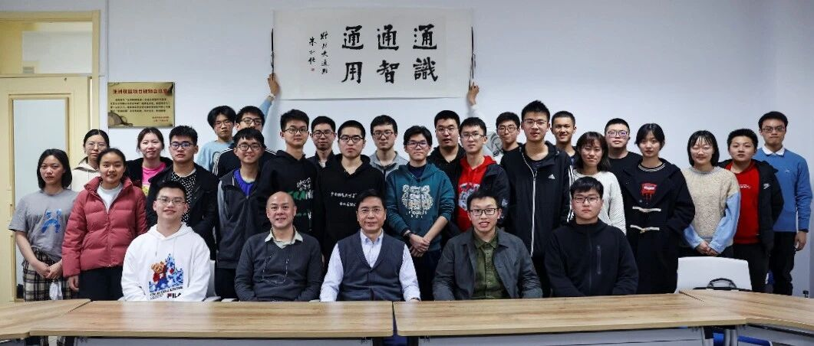

北京大学通用人工智能实验班官方公众号，来了！
为机器立心 为人文赋理
以中国之思想 创世界之科技
登无人之境，享明月清风。平天理心欲，活精彩人生。这里是北京大学通用人工智能实验班，以前沿、多元、自由的培养模式得天下英才而育；在这里，我们于跨学科的土壤上发现自我，把自己的梦想与人类的未来熔铸为一。2024年即将落下帷幕，新年的钟声正悄然临近，通班的发展也即将翻开崭新的篇章。值此辞旧迎新之际，北京大学通用人工智能实验班官方公众号正式建立！愿这个平台成为我们携手前行的桥梁，记录成长的足迹，点亮智慧的火花。诚邀您的关注，与我们共启智能之旅，共迎璀璨未来！

2021年春季学期
北京大学通用人工智能实验班
（简称“通班”）
正式开课
青年学子踏上AI研究前沿
全新挑战，全新课程
全新集体，全新未来
根据AIRankings的最新国际排名
北京大学在人工智能领域排名
全球第一
“超出预期”
同学们谈及在这里的学习和生活
都掩不住脸上的惊喜

▽点击视频，了解北大通班▽
全新挑战
人生不设限
“来到元培应该多尝试尝试”“我对新选择和新事物抱有开放态度”——面对新挑战的勇气和信心，促使他们推开了通班的大门。
2021年盛夏的一天，姜广源从朱松纯教授手中接过了科研暑期实践一等奖的证书。作为同学眼中的“大神”，这份奖项只是他在通班的若干成就之一。谈及在通班的收获，姜广源颇有感触：
硬件资源上，通班为我们提供了充足的计算资源、经费。非硬件资源上，在信科、人工智能研究院、智能学院、王选所以及北京通用人工智能研究院的支持下，通班暑期和学期内的科研实习项目十分丰富，具有充分的选择空间。
姜广源大一加入认知科学与人工智能相关交叉领域的研究，在NeurIPS、ICML等多个国际顶级会议发表多篇论文，于2023年当选为十位北京大学学生年度人物之一。

首届通班姜广源同学获北京大学学生年度人物殊荣
当对人工智能的向往，遇上全新培养方案和广阔发展平台，“心动”的感觉就此产生。起初，大家的专业规划各不相同：数学、心理学、计算机……但对“通用人工智能”共同的向往却让他们汇聚于此，探索这个位于学科交叉点上的新兴领域。

“人工智能是一个非常大的交叉学科，本身就有一个庞大的体系。” 通班的领衔创立者，北大人工智能研究院院长、讲席教授朱松纯介绍说。通用人工智能的研究目标是寻求统一的理论框架来解释各种智能现象，并研发具有高效的学习和泛化能力、能够根据所处的复杂动态环境自主产生并完成任务的通用人工智能体，使其具备自主的感知、认知、决策、学习、执行和社会协作等能力，且符合人类情感、伦理与道德观念。为了培养从事通用人工智能事业的复合型领军人才，仅仅把人工智能视为应用领域，课程只集中在某个研究热点上，是完全无法满足需要的：
一个人只有把人工智能六个领域都搞懂了、融会贯通了，你才能说你是人工智能领域的人才或者专家。

北京大学成立了国内人工智能领域最早的国家重点实验室。
北京大学人工智能研究院宣布成立，成为统筹全校相关资源、建设世界一流智能学科、服务国家人工智能重大战略、培养智能学科一流人才的主要支撑平台。研究院现有通用人工智能研究所、AI+理学研究所、AI+人文社科研究所及 AI+医学研究所四个研究所共 18 个研究中心，实现了“AI+文理医工”人工智能学科大交叉。
北京大学通用人工智能实验班（通班）开班。实验班以通用人工智能为核心，建立全面系统的人工智能培养体系和本博贯通的人才培养路径，实现了学科间大交叉、大融合，这在全国尚属首次。

2022年，由北京大学和北京通用人工智能研究院联合申请的“跨媒体通用人工智能全国重点实验室”成功获批，这是国内目前唯一一个以“通用人工智能”命名的全国重点实验室。

全新课程
改革不停歇
创新性，也意味着课程体系的大幅度改革。通班的领衔创立者朱松纯教授将通班培养目标归纳为交叉人文社科的“通识”，融会贯通人工智能六大领域的“通智”和融入各行各业的“通用”。


几年的实践中，课程体系成为通班真正的亮点，让同学们津津乐道。
2023级陈应涵认为收获最大的课程是《人工智能引论》：“作为AI入门课程，不仅让我们系统性地学习了搜索、机器学习、CV、NLP、机器人学等的入门知识，打好诸多理论基础，更是以多个lab的形式让我们动手实操，初次尝试用python实现自己的AI项目。”
2022级赵廷昊表示《人工智能初级研讨班》课程使他受益良多：“AI初级研讨班里，让初入人工智能领域的我，有机会窥见科研前沿各种奇妙的工作，对前路不禁浮想联翩；也让我们得以与学识渊博的教授们面对面交流，收获颇丰。”
2021级钱炜楠对《人工智能初级研讨班》与《人工智能引论》两门核心课程都十分喜爱：“前者让我窥探到人工智能的前沿，而后者让我系统地学习到部分人工智能相关的知识。”
2020级贾越如则对本学期新开设的课程《AI中的数学》颇感兴趣：“内容认真安排，作业精心设计，让我在每一章的学习后都对AI中的一些数学问题有了更加深入的了解。”
AI+法学领域的《人工智能伦理与治理》，邀请法学院教授讲授，在技术与社科的十字路口，引导大家思索人工智能应用触及到的伦理和法律问题，给很多同学留下了深刻印象。2019级林昊苇说，这门课让他“有一种同时扮演社会决策者、治理者和技术提供者的感觉”，“理解了真实社会运作的完整链条应该如何串联，理解了自己手中的技术之于社会的意义和作用。”

知识学习和科研相辅相成，也是通班培养体系的重要特点。北大人工智能研究院学术委员会委员王亦洲教授负责北大通班学生实践项目、科研课题的执行：
借助北京通用人工智能研究院的科研平台，我们设计了丰富的AI科研实践课题供同学们选择。同时我们也组织了优秀的科研导师团队和他们的研究生团队，一起指导同学们进行科研实践。

2024 年 10 月，人工智能系统实践基地正式成立

北大&清华通班科研实训营

人工智能研究院参与、北京通用人工智能研究院主导研发的全球首个通用智能人小女孩“通通”
姜广源跟随人工智能研究院的朱毅鑫老师进行了认知推理相关的研究，思考如何使得机器具有与人相似的思考、学习、推理方式。事实上，每次科研都带给他新的方向选择，让他得以在探索中逐渐找到自己的未来。姜广源学业和科研“双丰收”的背后，是通班给予同学们的广泛自由：“我选择了一条可能有些激进的科研道路。为了在激进中稳步前行，我摸索出了如何高效规划和使用时间的方法，来平衡学业和科研。”
同样感受到通班给予同学们选择自由的，还有获得第十四届全国大学生数学竞赛决赛（非数学类）一等奖的陈旭峥。他表示，自己在完成通班专业课的同时，逐渐发现了对于数学的热爱，“通班不仅为我们提供了人工智能各大领域的核心课程，还给同学们的自主探索留下了极大的空间。”陈旭峥相信，未来他依旧会在通用人工智能的专业上“不断探索，不断热爱”，在通班提供的广阔平台中，走出自己的道路。

全新集体
生活不枯燥
学在通班收获了什么？除了“知识”，很多同学还提到了一个关键词——“归属感”。
在通班，师生其乐融融，同学互爱互助，每一个人都能在集体中，收获温暖与感动。


北大通班课外活动


通班同学与哈佛大学、布朗大学荣休教授，菲尔兹奖获得者大卫•曼福德教授面对面交流

北大通班暑期科研实践
全新未来
逐梦不停歇
三年多的时间里，通班和同学们一同成长，并将在未来迎接更为辉煌的时代。
2019年5月16日，习近平总书记向国际人工智能与教育大会致贺信，提到：
把握全球人工智能发展态势，找准突破口和主攻方向，培养大批具有创新能力和合作精神的人工智能高端人才，是教育的重要使命。
贾越如回忆在通班的学习生活：“虽然是有过焦虑、有过挣扎、有过沮丧。但是心情的底色是开心的，对待困难的问题也能先沉下心来一步步解决，对于未来的规划也更加清晰了，少了一些迷茫彷徨，多了一些笃定和踏实。”“专业课的学习让人感受到数学与计算机的魅力，体验非常不错”，钱炜楠说，并对自己也有了更高的要求：“只有自己变得强大才能在这里扎根”。肖茜之结合自己的求学经历，寄语热爱数理研究的女同学们：“不要被外界的刻板印象所裹挟，大胆地探索自己感兴趣的科学领域。”姜广源则从通班的课程和科研中找到了适合的研究领域，准备在未来从事科研工作。在2023年的国际机器学习大会（ICML）上，姜广源作为第一作者带领项目完成了关于儿童认知启发的机器多模态单词学习工作，他表示，接下来将继续从事认知科学启发的人工智能相关研究，向着实现通用人工智能的目标前进。

未来已来，通班把未来的课程体系变成现实，通班人也将用专业知识把未来技术带入生活。人工智能，一个在科幻中常常出现的概念，正逐渐进入寻常百姓家。
根据AIRankings最近 5 年（2019-2024）的国际排名，北京大学在人工智能领域排名全球第一。随着一大批优秀研究人员归国加入，相信北大将成为人工智能领域的引领者。

思想自由，兼容并包，培育德才兼备的人才，是通班的现在，也是通班的未来。

一百年来
中国科学家们前赴后继
求实创新，科技兴国
如今，正值百年未有之大变局
同学少年，勇立潮头
传承先辈精神
他们将创造一个属于人工智能的新时代
引领下一个百年
来源：北京大学官微、北京大学招生办公众号